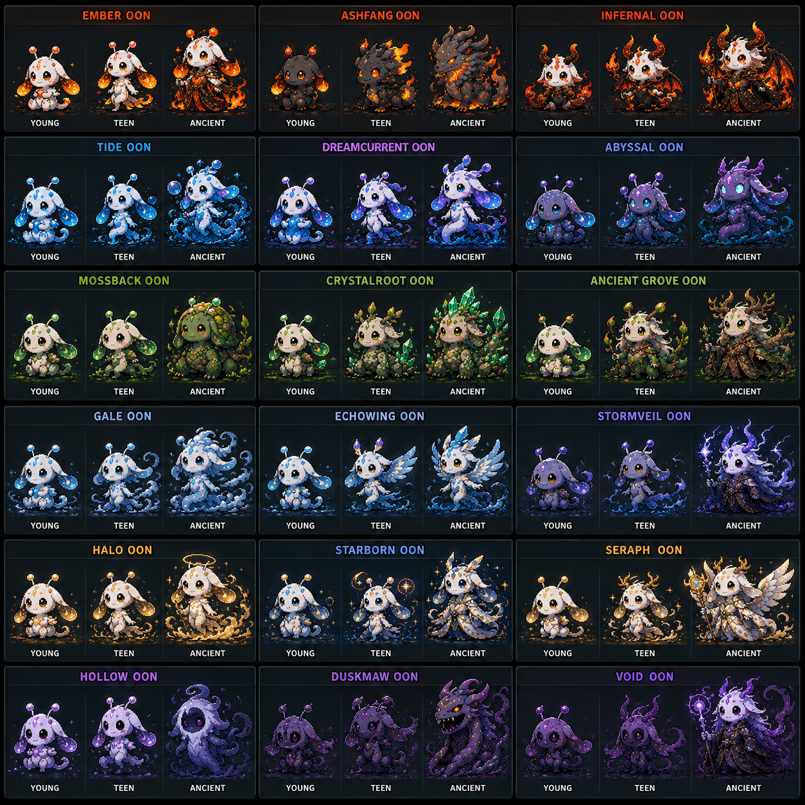

L'Inizio
Tutto parte da un uovo.
All'inizio del gioco ti viene consegnato un uovo. Dopo un breve tempo si schiude e nasce il tuo OON — una creatura unica con un nome generato casualmente, allo stadio Cucciolo, senza affinità elementale. Il suo futuro dipende interamente dalle tue scelte quotidiane.
Il Ritmo del Tempo
Tre cicli scandiscono la vita del tuo OON. Tutto il calcolo delle variazioni di stato e la nascita dei tratti si esaurisce nella giornata.
Se non ti colleghi, i giorni mancanti vengono simulati al rientro con valori medi e più caso. L'energia sale, l'umore e la socialità scendono — il tuo OON deriva prima verso Aria (energia alta), poi verso Acqua e Ombra (umore e socialità bassi). Un'assenza prolungata è irreversibile.
Un solo login senza interazioni equivale all'assenza. Per essere presente: almeno 3 login al giorno + tap + azione.
Gli Stati
Tre stati descrivono la condizione del tuo OON. Ogni stato ha due polarità che favoriscono tratti opposti. Col passare del tempo senza interazioni, l'energia sale, l'umore e la socialità scendono.
Lo stato a fine giornata dà un bonus probabilità al tratto corrispondente. Appena uno dei due tratti di una coppia viene ottenuto, l'altro è bloccato per sempre — spesso questa scelta avviene inconsapevolmente nei primi giorni.
Il Sistema
Ogni azione è associata a un'affinità elementale, varia uno stato in una direzione precisa, sviluppa un tratto e ha una sua abilità. Tutto è connesso.
Mangia e Bevi sono disponibili da subito. Esplora e Caccia si sbloccano rispettivamente con Riflessi lv1 e Predatore lv1. Gioca e Medita si sbloccano con Entusiasmo lv1 e Concentrazione lv1.
I Tratti
6 tratti base, 3 coppie esclusive. Appena un tratto di una coppia emerge, l'altro è bloccato per sempre. Non hanno limite di livello — la curva è esponenziale.
| Coppia | Tratto | Affinità | Azione | Stato |
|---|---|---|---|---|
| Energia | Robusto | Terra | Mangia | ↓ Energia |
| Agile | Aria | Esplora | ↑ Energia | |
| Umore | Sensibile | Acqua | Bevi | ↓ Umore |
| Vivace | Fuoco | Caccia | ↑ Umore | |
| Socialità | Riflessivo | Ombra | Medita | ↓ Socialità |
| Curioso | Luce | Gioca | ↑ Socialità |
Si sbloccano solo quando l'OON ha raggiunto lo stadio Antico con una razza completa. Esclusivi di ogni razza, curva esponenzialmente più ripida. Sono l'obiettivo a lunghissimo termine.
Le Interazioni
Oltre all'azione quotidiana, login e tap modificano gli stati ogni giorno. Soglia di presenza: almeno 3 login al giorno.
| Sorgente | Energia | Umore | Socialità |
|---|---|---|---|
| Login frequente (3+/giorno) | — | ↑ | ↑↑ |
| Login scarso (<3/giorno) | — | ↓ | ↓ |
| Tap frequenti (4+) | ↓ | ↑↑ | ↑↑ |
| Tap scarsi (1–3) | — | ↑ | ↑ |
| Assenza totale | ↑ | ↓ | ↓↓ |
Con il passare del tempo senza fare nulla: Energia ↑, Umore ↓, Socialità ↓. Chi non interagisce deriva naturalmente verso Agile prima (energia alta → Aria), poi verso Sensibile e Riflessivo (umore e socialità bassi → Acqua e Ombra).
Le Abilità
A fine settimana i tratti vengono valutati per la nascita di abilità. Ogni abilità accelera la crescita del tratto associato e può sbloccare nuove azioni. Livelli infiniti, curva esponenziale.
| Prerequisito | Abilità | Effetto | Sblocca |
|---|---|---|---|
| Robusto lv3 | Tempra | Accelera Robusto | — |
| Sensibile lv3 | Intuito | Accelera Sensibile | — |
| Agile lv3 | Riflessi | Accelera Agile | Esplora |
| Vivace lv3 | Predatore | Accelera Vivace | Caccia |
| Curioso lv3 | Entusiasmo | Accelera Curioso | Gioca |
| Riflessivo lv3 | Concentrazione | Accelera Riflessivo | Medita |
| Prerequisito | Abilità | Effetto |
|---|---|---|
| Vivace lv8 + Curioso lv5 | Intelligenza | lv1 = +1 azione/giorno · lv10 = +2 · lv30 = +3 |
Si sbloccano raggiungendo lo stadio Ancient con la razza. Ogni abilità unica combina effetti su più stati e tratti in una sola azione — è l'azione unica esclusiva di quell'OON. Livelli infiniti.
Affinità Elementali
A fine mese, se un tratto base ha raggiunto il livello soglia, può cristallizzarsi in affinità elementale. Raggiungere la soglia non garantisce l'affinità — la rende possibile.
| Tratto dominante | Affinità | Soglia |
|---|---|---|
| Robusto | Terra | lv5+ |
| Sensibile | Acqua | lv5+ |
| Agile | Aria | lv5+ |
| Vivace | Fuoco | lv5+ |
| Curioso | Luce | lv8+ (rara) |
| Riflessivo | Ombra | lv8+ (rara) |
A fine mese viene testato prima il tratto più alto: se la probabilità ha successo, quell'affinità emerge. Se fallisce, si testa il secondo tratto per livello, poi il terzo. È possibile che in un mese non emerga nessuna affinità — e che in un altro emergano condizioni favorevoli inaspettate.
Luce e Ombra richiedono una soglia più alta perché le azioni che le sviluppano (Gioca e Medita) si sbloccano più tardi.
Le Razze
Dopo aver ottenuto un'affinità, il path continua verso la razza. Qui entrano in gioco tutti e tre i tratti attivi — non solo quello dominante. La combinazione specifica dei tre tratti determina quale delle tre razze dell'elemento emerge a fine mese.

✦ Starborn e Void danno bonus aggiuntivi ai tratti rari.
Crescita di Stadio
La crescita è indipendente dall'affinità. Avviene a fine mese quando tutti e tre i tratti attivi hanno superato la stessa soglia.
| Transizione | Condizione |
|---|---|
| Cucciolo → Giovane | Tutti e 3 i tratti attivi lv15+ |
| Giovane → Antico | Tutti e 3 i tratti attivi lv30+ |
Stadio Antico
Raggiungere lo stadio Antico con una razza completa è solo l'inizio del percorso più lungo.
Un OON Ancient con razza sbloccata accede ai tratti rari esclusivi della sua razza. Levellare questi tratti attiva l'abilità unica e la sua azione esclusiva. La curva è esponenziale, il livello massimo non esiste. Chi vuole esplorare tutto ha 18 percorsi completamente diversi davanti a sé.
oltre lo stadio antico, qualcosa attende